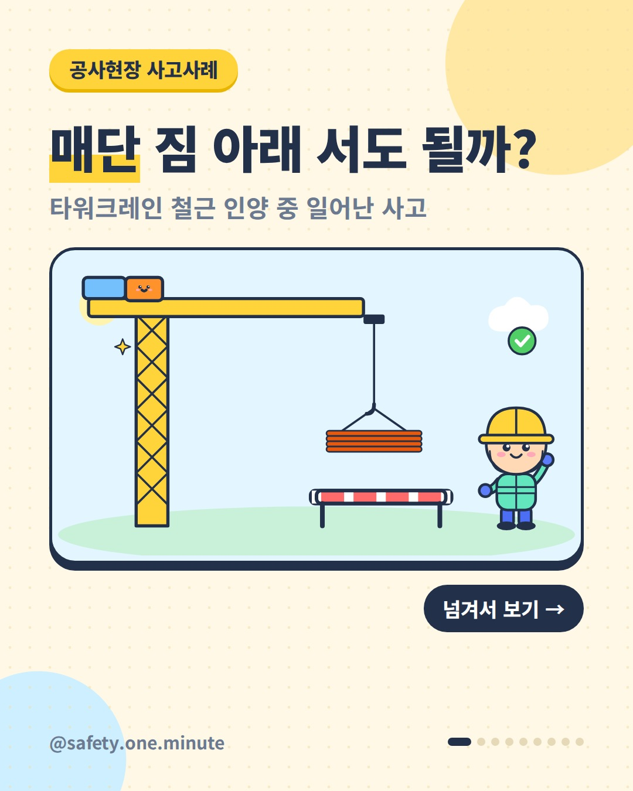
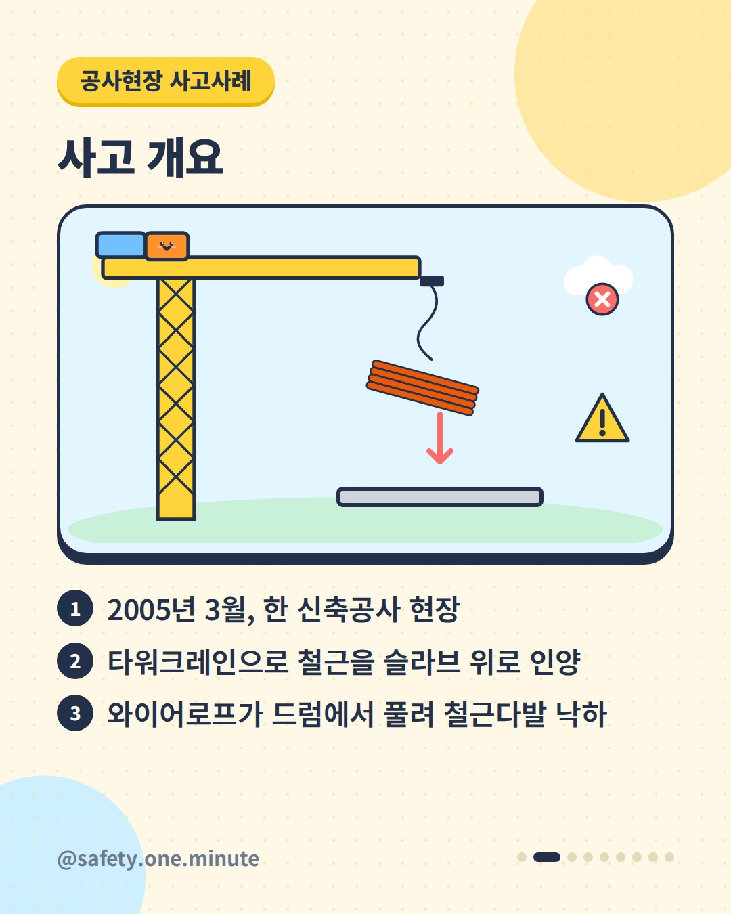
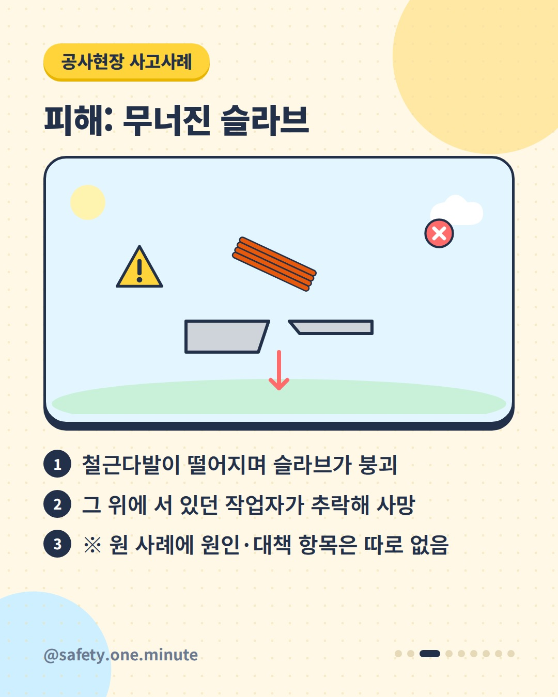
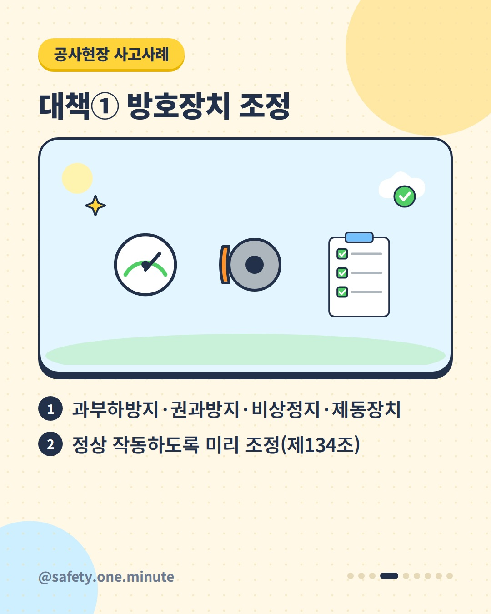
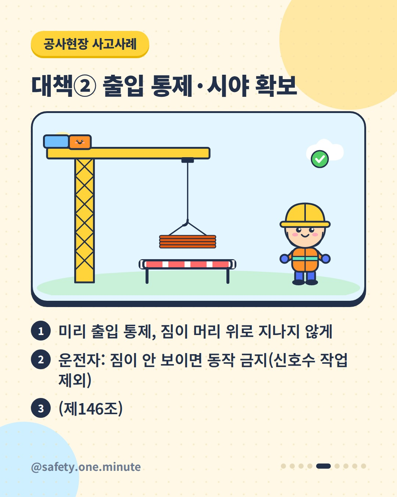
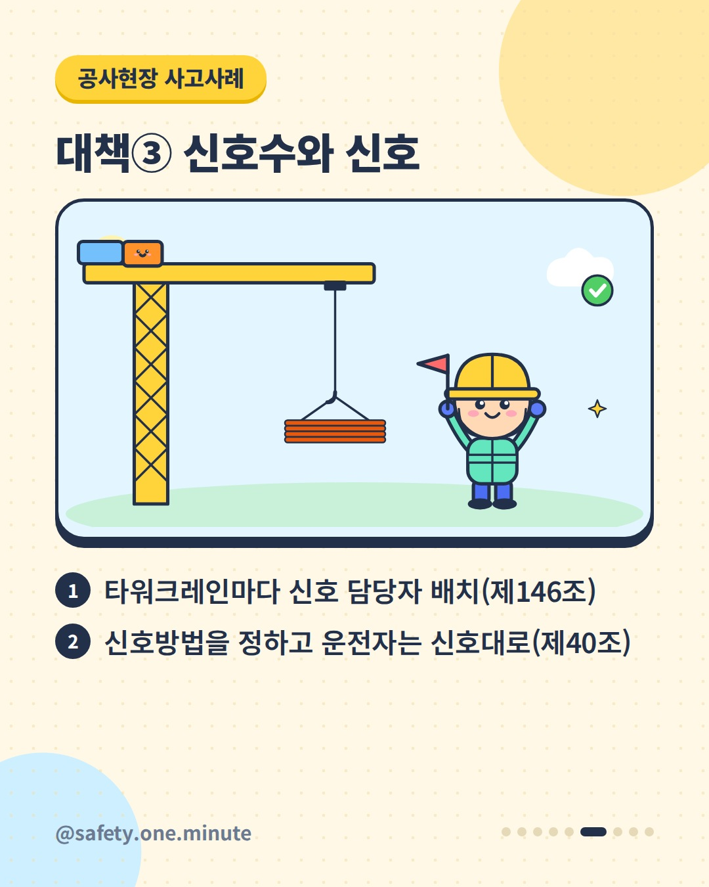
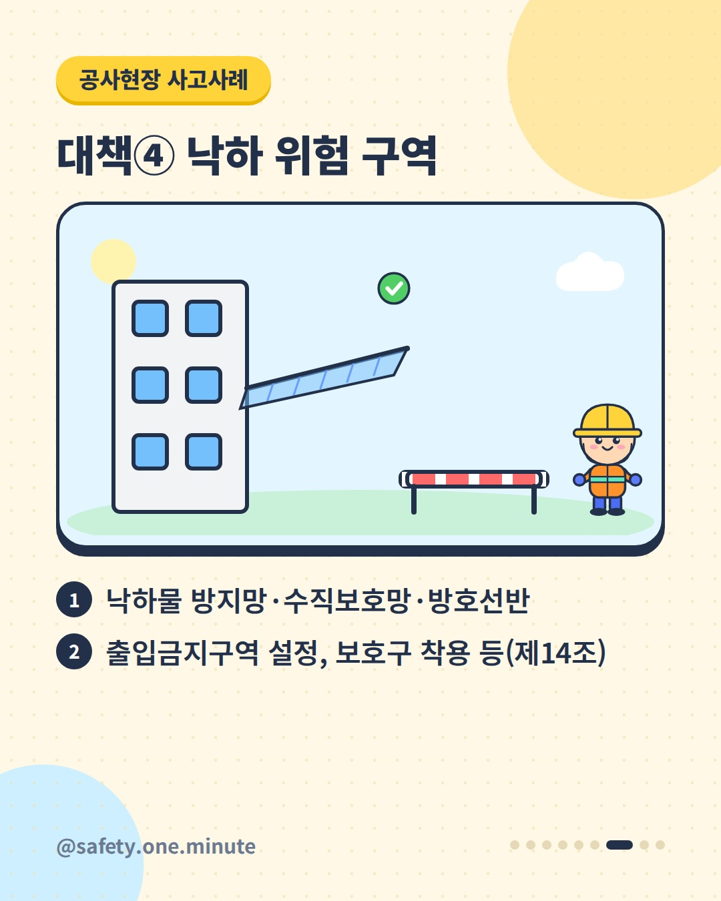
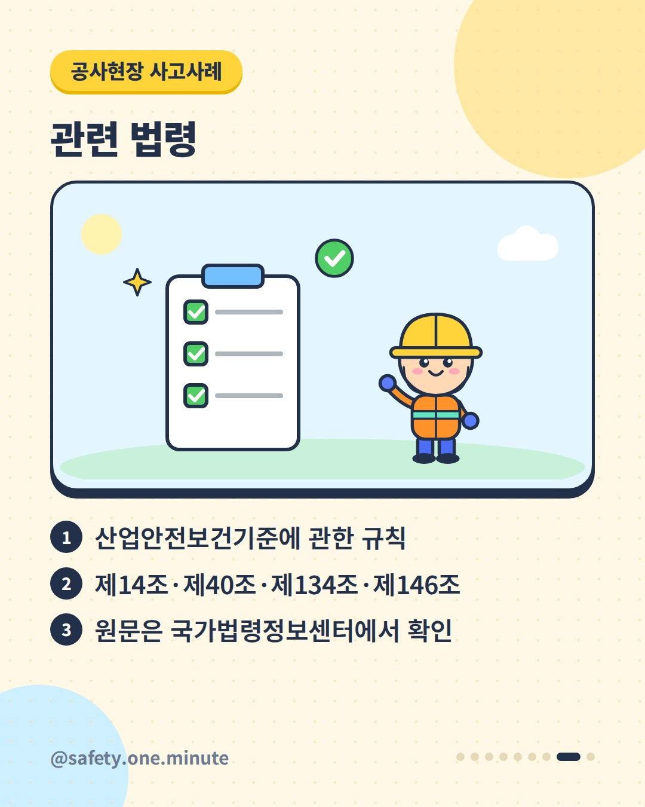
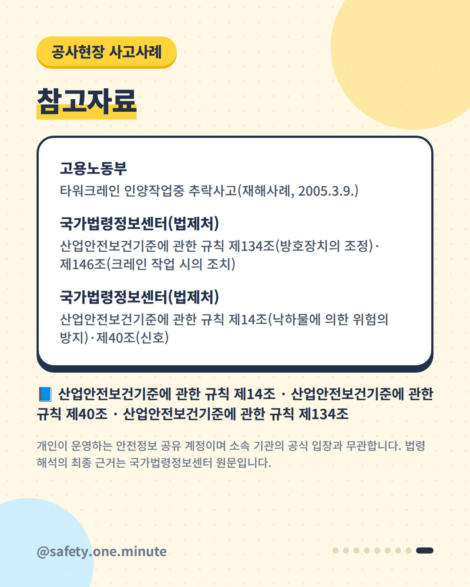

매단 짐 아래 서도 될까? — 9장 (4:5)









캡션
크레인으로 짐을 올리는 동안, 그 아래와 주변은 안전할까요? 고용노동부가 공개한 재해사례입니다(2005년). 한 신축공사 현장에서 타워크레인으로 철근을 1층 슬라브 위로 인양하던 중 와이어로프가 드럼에서 풀려 매달려 있던 철근다발이 떨어졌고, 작업자가 서 있던 슬라브가 무너지면서 작업자가 추락해 숨졌습니다. 현행 산업안전보건기준에 관한 규칙은 이렇게 정하고 있습니다. ① 과부하방지·권과방지·비상정지·제동장치 등 방호장치가 정상 작동하도록 미리 조정(제134조) ② 미리 출입을 통제해 인양 중인 짐이 작업자 머리 위로 지나가지 않게, 짐이 보이지 않으면 동작 금지(신호수 작업 제외)(제146조) ③ 타워크레인마다 신호 담당자 배치(제146조), 신호방법을 정하고 운전자는 신호에 따르기(제40조) ④ 낙하 위험이 있으면 낙하물 방지망·방호선반 설치, 출입금지구역 설정, 보호구 착용 등(제14조) ※ 원 사례에는 재해원인·대책 항목이 따로 없습니다. 사고 당시 법령과 현행 법령은 다를 수 있으니 세부 요건은 법령 원문(2025.9.1. 시행본 기준)을 확인하세요. 출처: - 고용노동부 – 타워크레인 인양작업중 추락사고 재해사례(2005) - 국가법령정보센터(법제처) – 산업안전보건기준에 관한 규칙 제14조·제40조·제134조·제146조 개인이 운영하는 안전정보 공유 계정이며 소속 기관의 공식 입장과 무관합니다. 법령 해석의 최종 근거는 국가법령정보센터 원문입니다. #타워크레인 #인양작업 #낙하물 #신호수 #건설안전 #사고사례